OWNER-SUPPLIED RECORDING · SOKOBOOK · 1 OCTOBER 2026
Learn from the form.
Keep our stronger model.
30 distinct screens, a field-by-field comparison and a preserved recording for future reference.
SKU and barcode already exist in EwaTrade. The next improvement is making them easy to discover and understand.
Recorded build only. Original 4:43 video and 284 one-second frames are saved locally. Authentication screens stay outside this design gallery. Click any screen for its full-resolution PNG.
What to bring into Direction 02
Now in the preview: Advanced options → SKU & barcode, plus a multi-unit list and reference-unit dropdown. Next proposals: optional Category, stock alerts and a properly owned purchase-cost flow.
| Competitor | Recorded behavior | EwaTrade today | Design direction |
|---|---|---|---|
| Item name | Visible at the top | Supported; required name | Keep in Essentials. |
| Product / Service | Inline selector | Supported; kind chosen before the named form | Keep the existing kind entry; avoid repeating the same decision. |
| Category | General selector + searchable list + create | CatalogItem.category exists; audited mobile setup does not expose/send it | Propose an optional Organization row; confirm category CRUD/filter contracts. |
| Opening stock | Stock Details input | Supported; exact base or per-choice quantity | Keep separate Stock editor; blank must remain undeclared. |
| Unit | Single Unit dropdown; not opened | Multiple selling units and exact conversions supported | Keep the richer Egg → Tray → Carton flow, with reference-unit dropdown. |
| Sales price | Stock Details input | Supported; independent option × unit prices | Keep stock-unit price in Essentials and each added unit’s price in its editor. |
| Purchase price | Input next to Sales Price | Not exposed by the audited setup; no matching field in current CatalogProduct model | Later candidate: acquisition cost must belong to an explicit stock receipt/costing policy, not silently become sales price. |
| Low-stock alert | Toggle reveals Low Stock Quantity | No matching control in audited form or threshold field in current Catalog models | Later candidate: Stock alerts editor, threshold in canonical stock units, per Store/stock pool; Service excluded. |
| Item Code + Generate | Editable numeric code; Generate visibly fills it | SKU + barcode already supported on Offering; hidden in combination More | Expose Advanced options → SKU & barcode. Suggest editable SKU; verify tenant uniqueness at real save. Do not treat generated code as manufacturer barcode. |
| Description | Additional Details textarea | Item and choice descriptions supported | Keep optional description row; allow a choice-specific override where relevant. |
| Item image | Additional Details camera/image tile | Current audited editor accepts an image link; no top-level native picker/preview | Keep visible Images row near name; native selection/storage/default/override remains implementation work. |
| Save | Sticky action; item appears in inventory | Real create flow exists; workshop save is simulated | Keep Review then Save, validation, duplicate-code errors and save recovery. |
| Customer choices | Not demonstrated | Options/variants supported | Keep separate from units; do not infer competitor absence outside this recording. |
| Separate prepared stock | Not demonstrated | Supported generic stock behavior | Keep explicit shared vs prepared choice; selecting a conversion reference never transfers stock. |
| Barcode scanning | Not demonstrated | Barcode entry supported; scanning not verified here | Keep manual entry; scanning is a separate acceptance item. |
Item form — every distinct recorded state
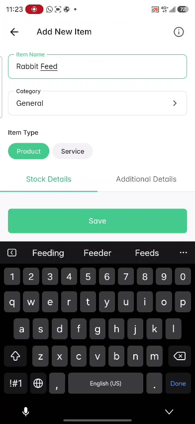
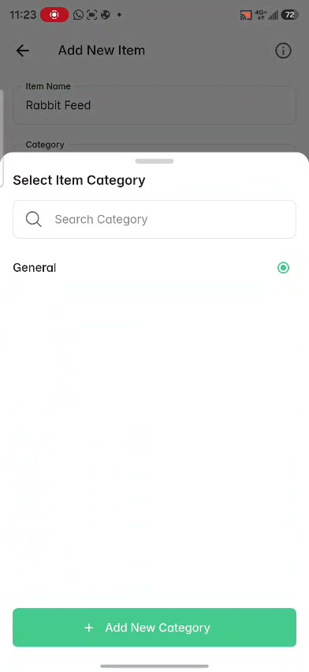
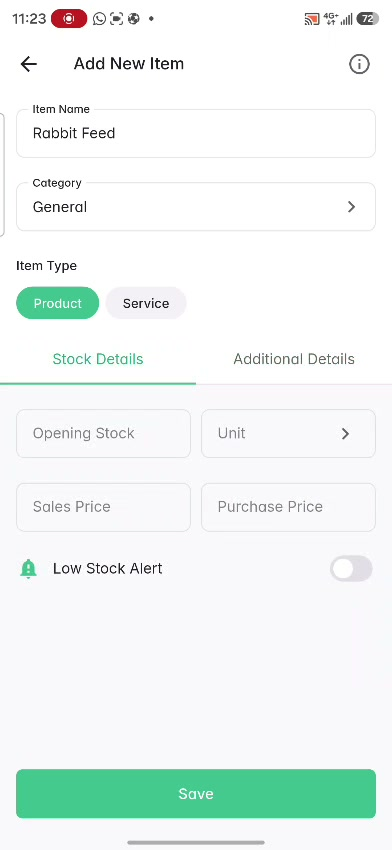
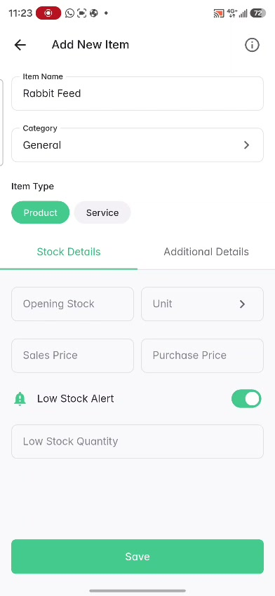
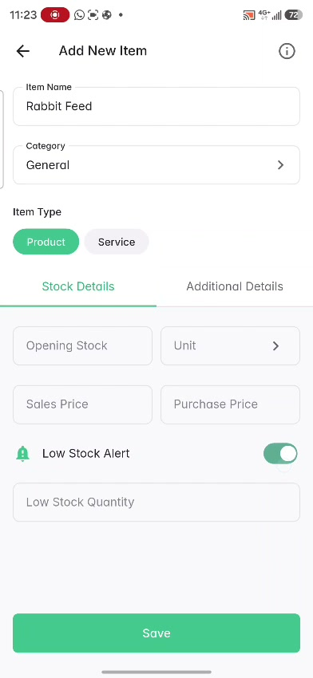
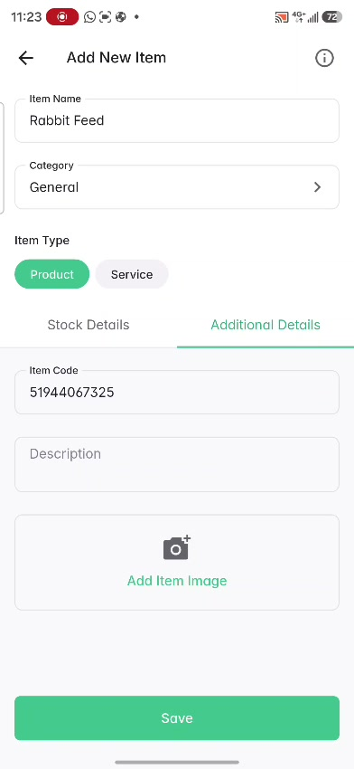
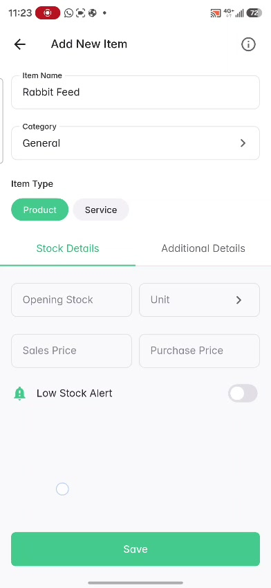
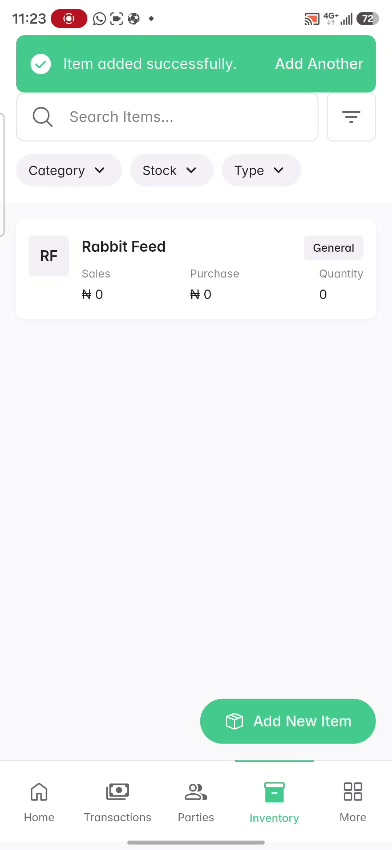
Lists and related flows
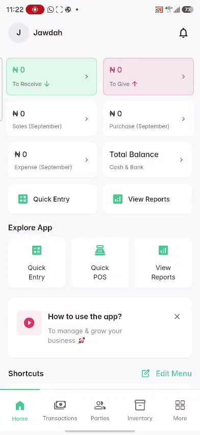
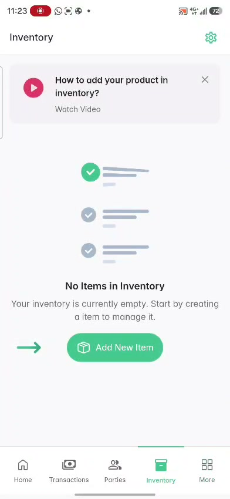
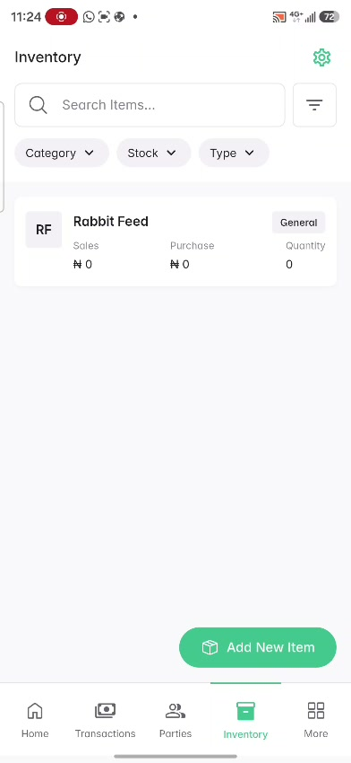
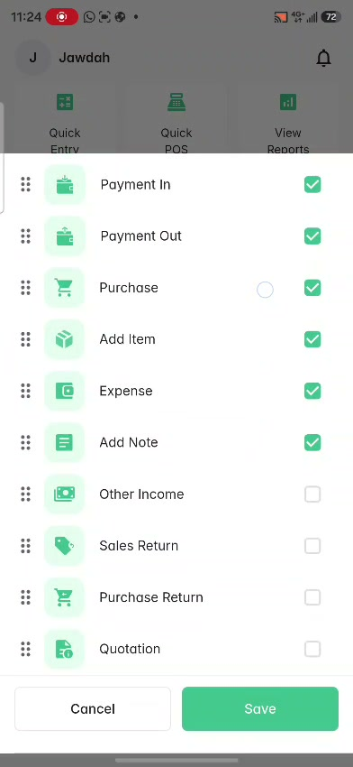
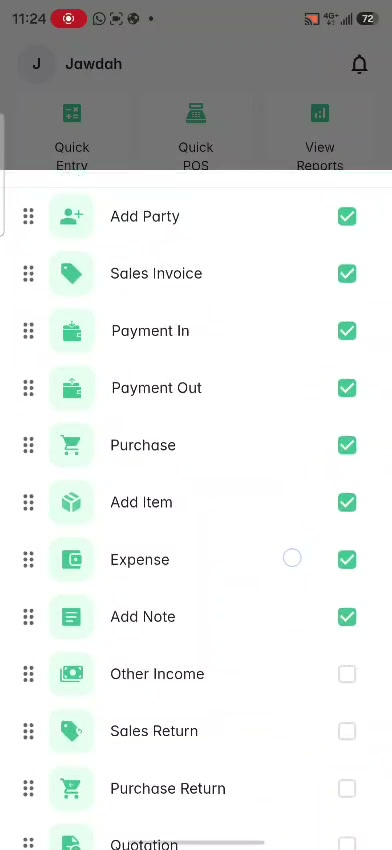
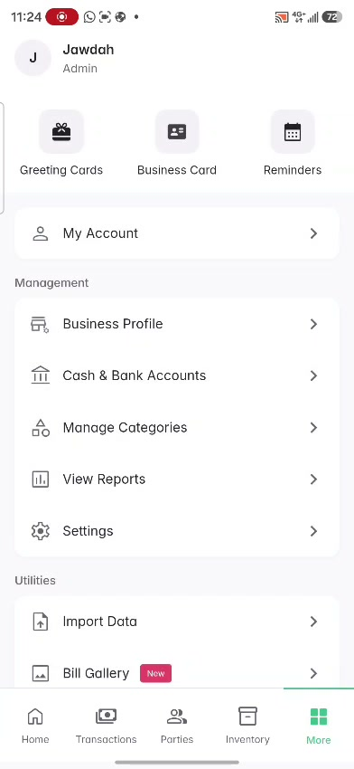
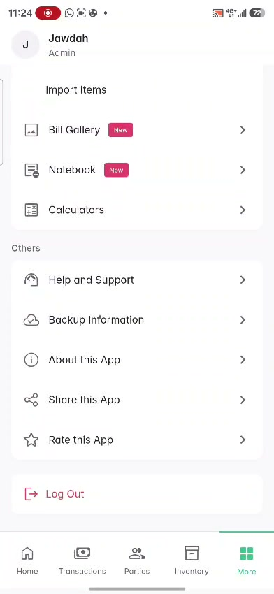
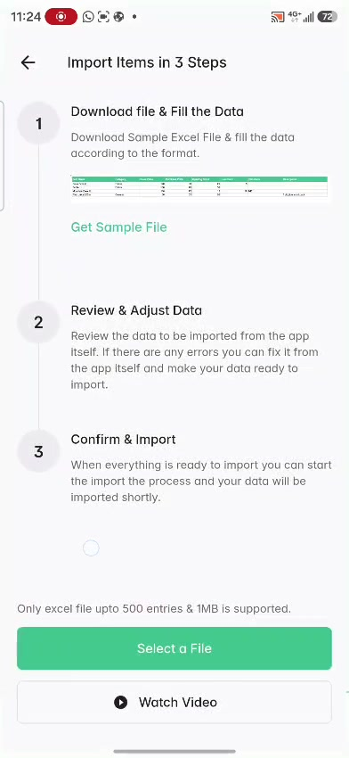
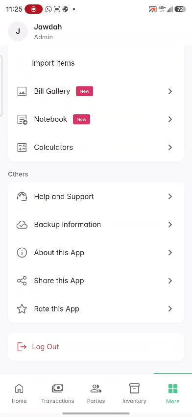
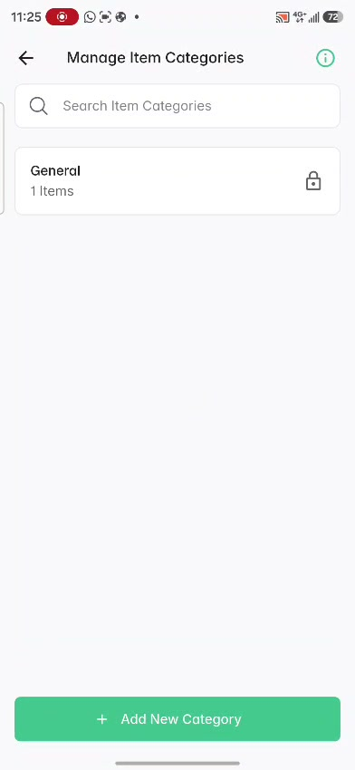
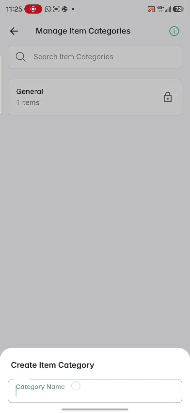
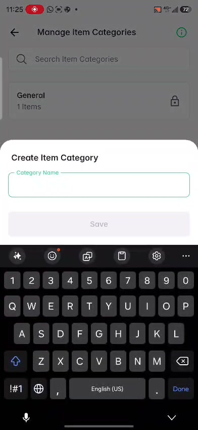
Settings reference
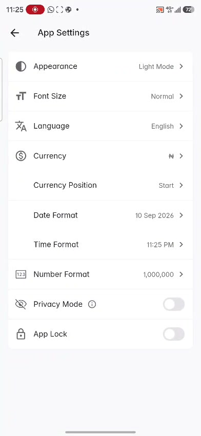
Onboarding and related-form references
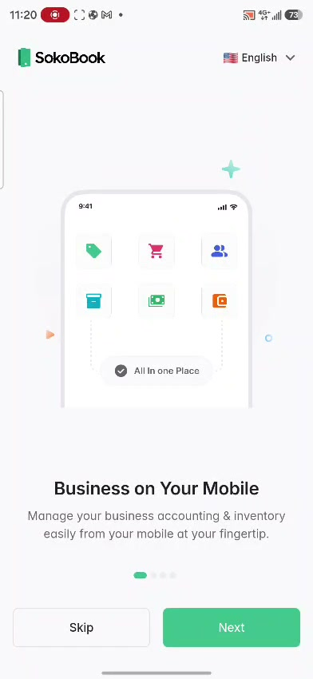
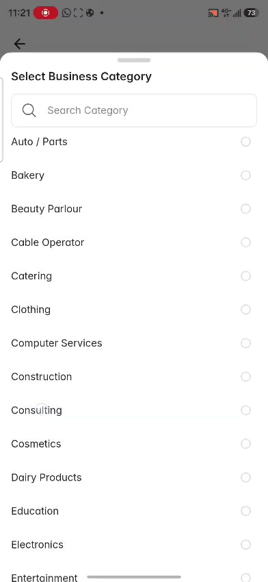
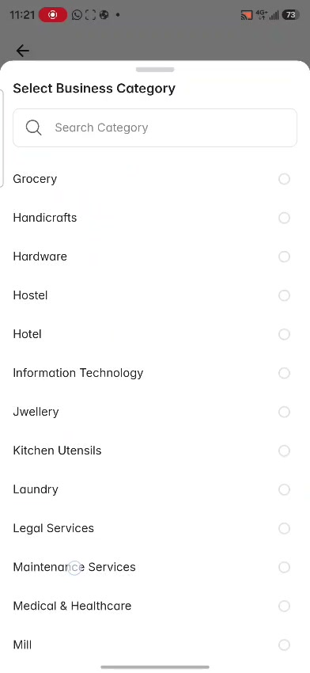
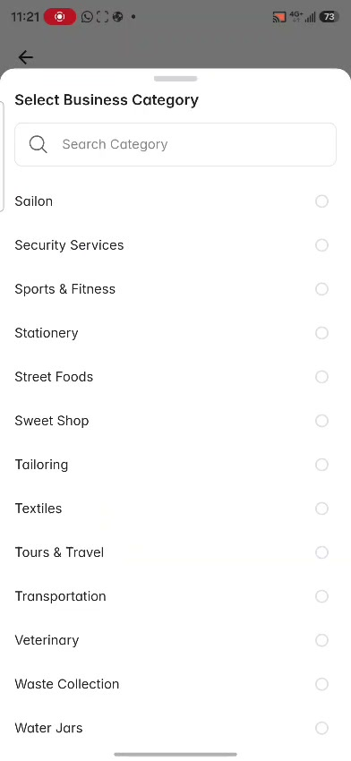
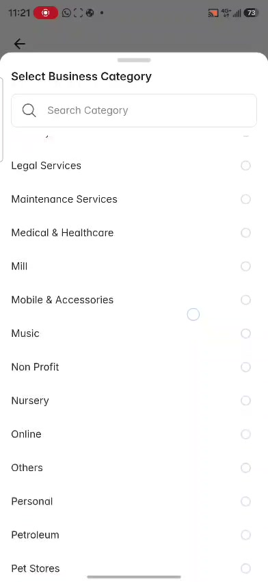